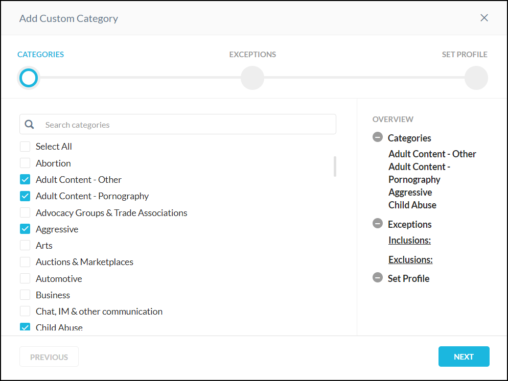

Custom Category
The custom category feature offers flexibility to supersede the predefined Netskope URL category mapping for a given URL and/or augment them by defining custom URL categories. This is helpful for situations in which the Netskope predefined URL category does not have a mapping for a URL (uncategorized). A Netskope Secure Web Gateway license is required to use Custom Categories.
To create a new custom category:
Go to Policies > Web > Custom Categories.

To add a new category, click New Custom Category. The Add Custom Category wizard displays.
Search or select the category and click Next.
 Search for URL lists to include in the new category or click + Create New.
Highlight Exclusion from the first column to search for URLs to exclude from the new category or click + Create New to add a new one for exclusion.

Repeat these steps until you have included and excluded the URL lists as desired. Click Next.
Type a name for your custom category.
Click Save Custom Category. This newly created custom category will be available in the Categories dropdown when creating an Real-time Protection policy.
URL Lists
Custom URL lists offer flexibility to supersede the predefined Netskope URL category mapping for a given URL and/or augment them by defining custom URL categories for situations in which the Netskope predefined URL category does not have a mapping for a URL (uncategorized).
Before you begin, compile a list of URLs to include in a policy scan, and if needed, create another list of URLs to exclude from a policy scan. You can enter the URLs individually in the UI or create a CSV file with all the URLs. Once you complete this step, you must create a custom category.
To add a URL list:
Go to Policies > Profiles > Web > URL Lists.

To add a new URL list, click New URL List.

Enter a name for your URL list.
Type the URLs separated by a new line or upload a CSV file (max upload is 8 MB).
Important
URLs in the list must follow certain formats. Here are the rules for URLs in this list.
URL Format
Matched URLs
www.example.com/path/to/resource
www.example.com/path/to/resource/a, www.example.com/path/to/resource/a/b
example.com
example.com/, example.com/path/a
www.example.com
www.example.com, www.example.com/path/a, www.example.com/some/path, www.example.com/query?a=b
*.example.com
www.example.com, www.us.example.com, www.uk.example.com
"*.example.com" does not include “example.com”. A separate entry must be created for "example.com".
www.example.com/path/*/
Not Supported
www.example.com/*, www.example.com/path/*
Not Supported
Click Save.
Click Apply Changes.
Note
The REST API can be used to add to an existing URL list, but not create a new URL list. For more information, refer to .
URL Lookup
The URL Lookup page enables you to enter a URL in the Netskope UI and retrieve the corresponding Netskope category and policy information. The category is unified information for predefined and custom categories. The lookup entry can be a URL or a domain, the search returns the predefined Netskope categories as well as any custom category to which the URL is classified. This feature also displays applicable policies to the URL and/or domain. URL Lookup checks for both Dynamic URL classifications and unclassified URLs.
To access the URL Lookup page, go to Policies > Web > URL Lookup. Type a single URL or domain one at a time.
 |
After you type a valid URL, the results displays in two tables related to categories and policies. The category table shows name and type (predefined or custom) and the policy table shows name only.
 |
If the URL is miscategorized, use Custom Categories to define a custom URL category or .